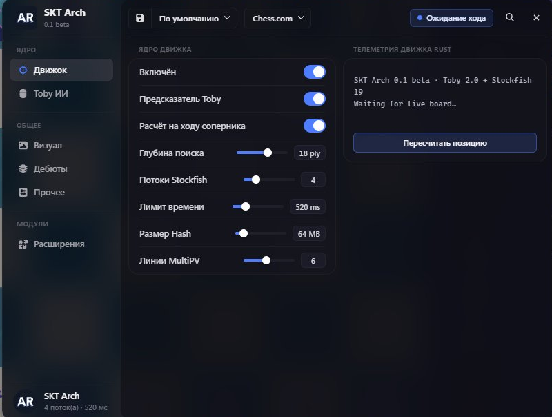

Модификация
Chess.com
Запуск в 1 клик
Скачать
- Анализ позиций в реальном времени
- Предсказатель ходов AIarch v1
- Тренировка дебютов и тактики
- Полная совместимость с SKT Arch
Все модификации и модель анализа SKT Arch доступны бесплатно внутри одного лаунчера


Никаких тяжёлых веб-обёрток: быстрый старт, минимальное потребление RAM и мгновенный отклик интерфейса.
Вы сами задаёте глубину поиска, число потоков, лимит времени и размер Hash под мощность своего компьютера.
Новые шахматные сервисы и улучшения модели добавляются прямо в лаунчер без ручной переустановки.
Модификации Chess.com и Lichess + модель SKT Arch v0.1 beta уже внутри
Скачать для Windows